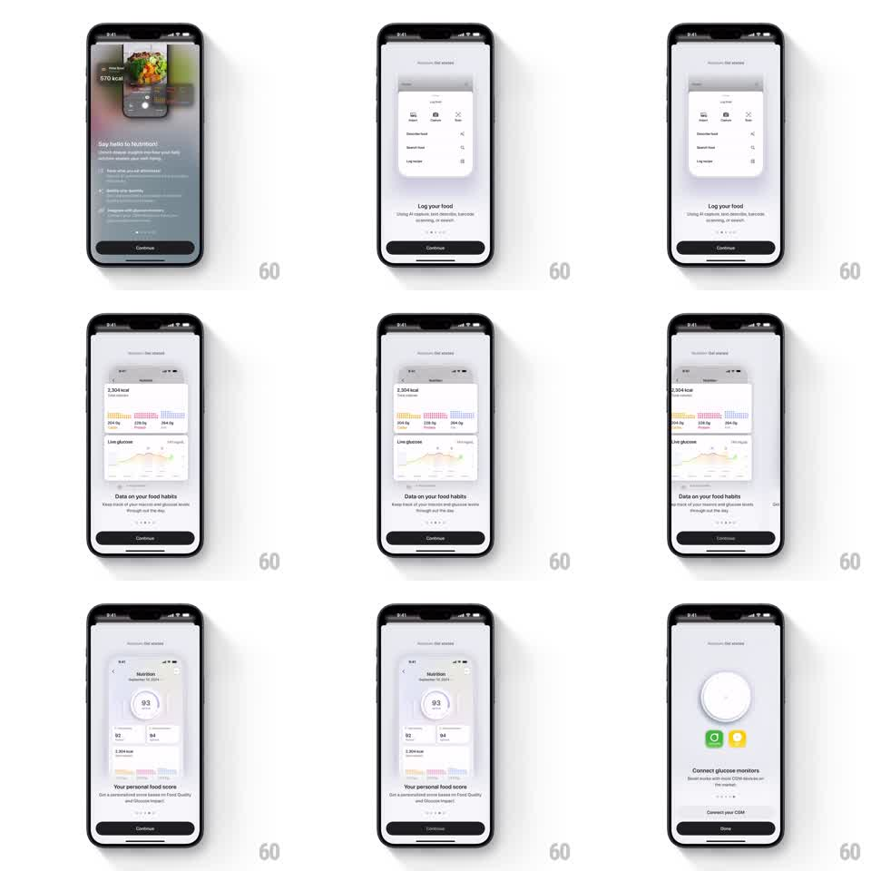

Media
Frame-by-frame

Rebuild this interaction 1:1: Bevel's onboarding carousel - tap Continue and the current product-screenshot card springs away up and back while the next card rises into its place, headline and copy crossfading underneath.

Rebuild this interaction 1:1: Bevel's onboarding carousel - tap Continue and the current product-screenshot card springs away up and back while the next card rises into its place, headline and copy crossfading underneath. ## Integration Integration: stack-agnostic spec - springs given as stiffness/damping, timed motions as duration + curve; map every value to your framework and animation library of choice. ## Scene Onboarding pages: a large rounded card showing an app screenshot (nutrition score, food logging, glucose charts), headline + subcopy below it, page dots, fixed Continue/Done button at the bottom. ## Motion spec Pattern: springy card swap + staggered text, ~700ms. - Tap Continue: the current card lifts, scales down to ~0.9 and slides up-left off its slot (spring ~300/22), revealing the next card which was parked slightly lower and smaller (scale 0.94, y +40px). - The incoming card rises and scales to 1 with a spring (~300/20), one soft overshoot. - Headline crossfades first (200ms), subcopy 80ms later - a slight upward drift (~8px) rides each fade. - Page dots advance with the active dot sliding (200ms); the button stays put, its label flipping to Done on the last page via crossfade. - Cards carry a soft drop shadow that lifts (grows) as the card rises and settles (shrinks) when it lands. ## Calibration - The outgoing and incoming cards overlap for most of the transition - sequential exits and entrances feel like a slideshow. - One overshoot on the incoming card only; the outgoing card leaves cleanly. ## Reduced motion Simple crossfade between pages (250ms); dots and labels still update. ## Don't miss - The next card must be visible (parked, dimmed) behind the current one before the tap - the peek is the affordance. - Text changes land while the card is mid-flight, so the eye reads new content as the new card arrives.